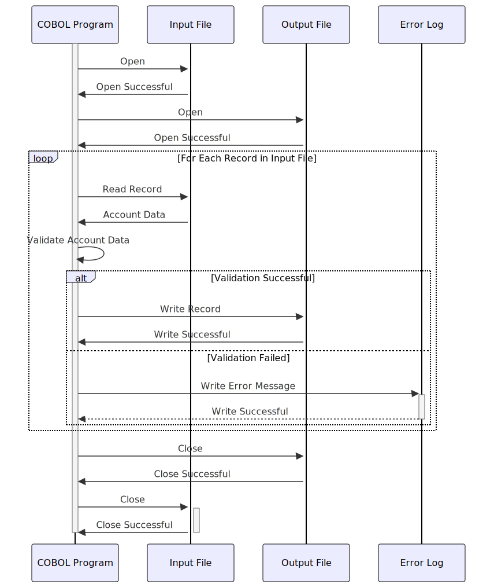

Gerado em: 1º de outubro de 2024
Título do Documento: Processador de Atualização de Conta de Cartão de Crédito
Descrição Resumida:
Este documento descreve as especificações para um programa COBOL projetado para processar atualizações de contas de cartão de crédito. O programa lê os dados da conta de um arquivo de entrada, valida os dados de acordo com as regras de negócios predefinidas e grava os registros válidos em um arquivo de saída. Quaisquer erros encontrados durante o processamento são registrados para posterior investigação e correção.
Histórias do Usuário:
Como analista de dados, preciso garantir que apenas informações válidas e atualizadas da conta do cartão de crédito sejam usadas para análise e geração de relatórios. Este programa me ajuda a conseguir isso validando dados e isolando quaisquer registros que não atendam aos critérios definidos.
Épico Relacionado:
2 - Gestão de Contas
Requisitos Funcionais:
-
Leitura do Arquivo de Entrada:
- O programa deve ser capaz de ler dados da conta do cartão de crédito de um arquivo de entrada predefinido.
- O formato do arquivo de entrada e o layout do registro devem seguir a estrutura definida no copybook
COACTUP.CPY.
-
Validação de Dados:
- Status da Conta: Verifique se o código de status da conta (
ACSTTUSI) é válido (por exemplo, ‘A’ para Ativo, ‘C’ para Cancelado). Se um código inválido for encontrado, o registro deverá ser sinalizado como inválido e um erro deverá ser registrado.
- Limite de Crédito: Verifique se o limite de crédito (
ACRDLIMI) é um valor numérico e está dentro dos limites aceitáveis. Caso contrário, marque o registro como inválido e registre um erro.
- Datas: Valide todos os campos de data (data de abertura, data de expiração) para garantir que estejam no formato correto (AAAAAMMDD) e sejam logicamente válidos. Por exemplo, a data de expiração deve ser posterior à data de abertura. Sinalize e registre erros para quaisquer valores de data inválidos.
- Nome e Endereço: Valide se os campos obrigatórios como Nome (
ACSFNAMI), Sobrenome (ACSLNAMI), Endereço Linha 1 (ACSADL1I), Estado (ACSSTTEI), CEP (ACSZIPCI) e Cidade (ACSCITYI) estão presentes e atendem aos requisitos de comprimento.
- Número do Seguro Social: Se aplicável, valide o Número do Seguro Social (SSN) quanto ao formato correto (9 dígitos) e potencialmente em relação a um banco de dados ou serviço externo para verificação, se necessário.
- Número de Telefone: Valide os campos de número de telefone (
ACSPH1A, ACSPH1B, ACSPH1C) para garantir que contenham apenas valores numéricos e atendam aos requisitos de comprimento.
-
Gravação do Arquivo de Saída:
- Registros válidos, após passarem em todas as verificações de validação, devem ser gravados no arquivo de saída.
- O formato do arquivo de saída e o layout do registro devem seguir a estrutura definida no copybook
COACTUP.CPY.
-
Tratamento e Registro de Erros:
- Se um registro falhar na validação, grave uma mensagem de erro detalhada em um arquivo de log de erros.
- A mensagem de erro deve incluir o número da conta, o campo específico que falhou na validação e o motivo da falha.
- Forneça opções para o usuário revisar o log de erros e potencialmente corrigir os dados de entrada para novo processamento.
Requisitos Não Funcionais:
-
Desempenho:
- O programa deve ser otimizado para desempenho para lidar com grandes volumes de dados de contas com eficiência.
- O tempo de processamento para um determinado conjunto de dados deve estar dentro dos limites aceitáveis definidos pelos requisitos de negócios.
-
Confiabilidade:
- O programa deve ser confiável e robusto, capaz de lidar com erros inesperados normalmente, sem corrupção de dados.
- Implemente mecanismos adequados de tratamento de erros e recuperação para garantir a integridade dos dados.
-
Manutenibilidade:
- O código deve ser bem estruturado, modular e documentado para facilitar a manutenção e os aprimoramentos futuros.
- Use nomes de variáveis e comentários significativos para melhorar a legibilidade do código.
-
Segurança:
- O acesso ao programa, arquivos de entrada, arquivos de saída e logs de erros deve ser restrito apenas ao pessoal autorizado.
- Dados confidenciais, como números de contas e SSNs, devem ser criptografados durante o processamento e armazenamento, se os regulamentos exigirem.
Critérios de Aceitação:
-
Validação e Processamento de Dados Bem-Sucedidos:
- O programa deve validar corretamente todos os registros de entrada em relação às regras de negócios definidas.
- Apenas registros válidos devem ser gravados no arquivo de saída, garantindo a precisão e consistência dos dados.
-
Tratamento de Erros Abrangente:
- O programa deve capturar e registrar todos os erros encontrados durante a validação e o processamento.
- As mensagens de erro devem ser informativas e úteis para solução de problemas.
-
Desempenho e Eficiência:
- O programa deve processar um volume significativo de dados de contas dentro de um prazo aceitável.
- O teste de desempenho deve ser conduzido para validar a velocidade de processamento e a utilização de recursos.
Melhorias de Código:
- Modularização: Divida o código em módulos ou sub-rotinas menores e gerenciáveis para melhorar a legibilidade e a capacidade de manutenção.
- Tratamento de Erros: Implemente uma rotina centralizada de tratamento de erros para evitar código redundante e garantir o registro de erros consistente.
- Documentação: Adicione comentários claros e concisos para explicar a lógica e o propósito de diferentes seções de código.
- Otimização de Desempenho: Use estruturas de dados e algoritmos apropriados para otimizar a velocidade de processamento de dados.
Melhorias de Segurança:
- Controle de Acesso: Implemente controles de acesso rígidos para restringir a execução do programa e o acesso a dados a usuários autorizados.
- Criptografia de Dados: Considere criptografar elementos de dados confidenciais em trânsito e em repouso para proteger contra acesso não autorizado.
- Trilha de Auditoria: Implemente uma trilha de auditoria para registrar todas as execuções do programa, ações do usuário e alterações de dados para fins de segurança e conformidade.
Diagrama Conceitual:

–Made by “Smart Engineering” (by Compass.UOL)–